clamp 패치에서 발견한 크래시와 잘못된 가정
타입 범위, 불필요한 플래그 조건, 상하한 순서, 타깃별 비용을 각각 검증한다.
llvm213690_proceed.pdf의 전체 내용입니다. 설명·코드·표·검증 기록을 생략하지 않고 옮겼습니다. 그림 안의 문자 인식 결과에는 기호 오류가 있을 수 있어 이미지도 함께 제공합니다.
이 문서의 목차
L LV M I N S T C O M B I N E 패 치 개 발 기 / 패치가 일으킨 버그들 / 발견부터 수정까지 — 4 가지 케이스로 보는 실전 디버깅
LLVM INSTCOMBINE 패치 개발기
패치가 일으킨 버그들
발견부터 수정까지 — 4가지 케이스로 보는 실전 디버깅
김준영 | LLVM 멘토십 프로그램
foldClampWithNaNFallback (InstCombine) — Issue #213189 구현 과정에서 발견된 문제들
페이지 배치·기호·도식 확인하기

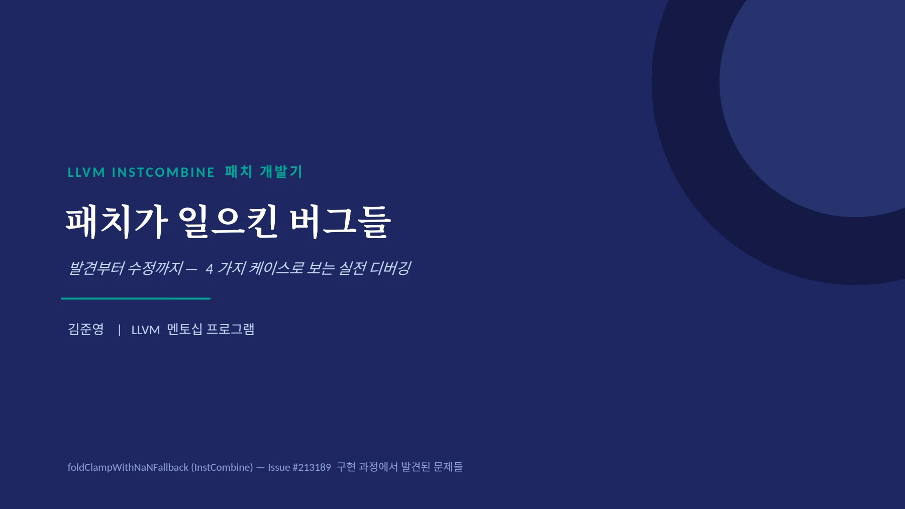
00 · 시 작 전 에 / 오늘 나올 용어 5 개 — 미리 정리 / 코드를 몰라도 이 다섯 개만 알면 발표 전체를 따라올 수 있다
00 · 시작 전에
오늘 나올 용어 5개 — 미리 정리
코드를 몰라도 이 다섯 개만 알면 발표 전체를 따라올 수 있다
assertion / crash
코드 안에 넣어둔 "이 조건은 항상 참이어야 한다"는 자체 점검 장치. 어긋나면 프로그램이 즉시 강제 종료됨(SIGABRT)
libcall
하드웨어에 전용 명령어가 없을 때, 대신 라이브러리 함수 호출로 대체 실행하는 것 — 느림
hasOneUse()
이 값이 딱 한 곳에서만 쓰이고 있는지 확인하는 함수 — 안전한 최적화의 기본 점검
aggregate 타입
float, double 같은 낱개 값이 아니라, 여러 값을 묶어놓은 타입(구조체 { float, float }, 배열 등 )
fast-math 플래그 (nsz)
"부호 있는 0(+0.0/-0.0) 차이는 신경 안 써도 된다"는 컴파일러 허락
02
페이지 배치·기호·도식 확인하기

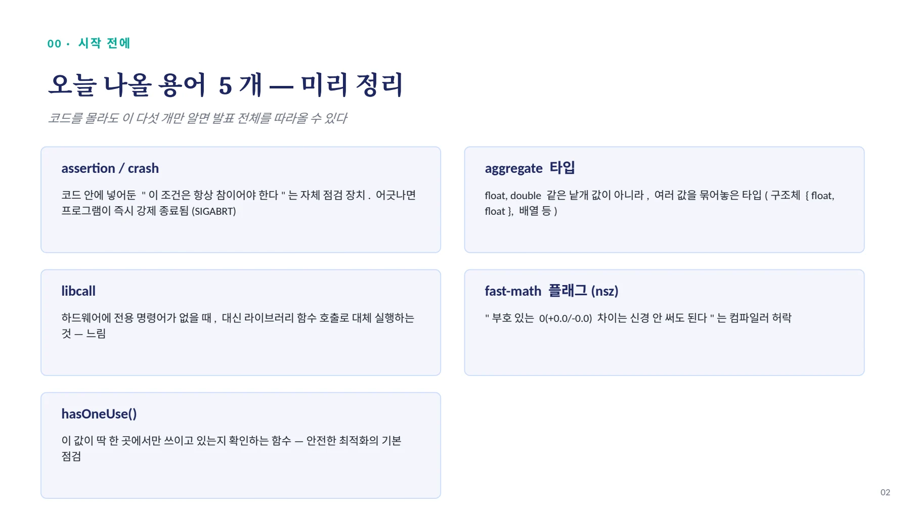
01 · 개 요 / 실제 패치는 한 번에 완성되지 않는다 / • 저번 발표에서 다룬 foldClampWithNaNFallback 패치는 , 처음 구현부터 지금 상태까지 오는 동안 4 가지 문제를 거
01 · 개요
실제 패치는 한 번에 완성되지 않는다
•
저번 발표에서 다룬 foldClampWithNaNFallback 패치는, 처음 구현부터 지금 상태까지 오는 동안 4가지 문제를 거쳤다
•
이 문제들은 '실수'가 아니라, LLVM처럼 크고 복잡한 코드베이스에서 새 최적화를 넣을 때 흔히 겪는 종류의 함정들이다
•
각 케이스마다: 문제가 된 코드 → 실제 증상 → 근본 원인 → 수정 방법 순서로 살펴본다
1
타입 가드
정수/구조체 select에서 2번 크래시
2
과잉 제약
fcmp에 불필요한 nsz 요구
3
정확성 누락
LO>HI 케이스 미검사
4
설계 트레이드오프
legacy 타깃에서 libcall 발생
03
페이지 배치·기호·도식 확인하기

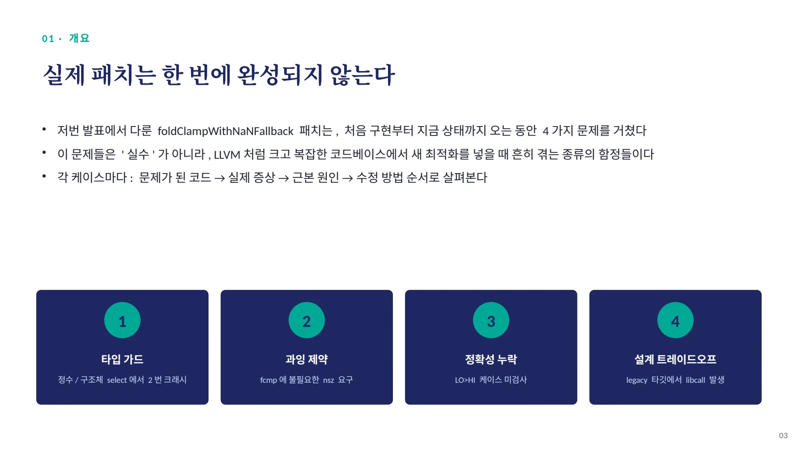
02 · 케 이 스 1 — 타 입 가 드 / " 부동소수점 연산인지 " 부터 확인해야 하는 이유 / • 우리 패치는 nsz( 부호 있는 0 무시 허락 ) 플래그를 확인해야 하는데 , 이 플래그는 부
02 · 케이스 1 — 타입 가드
"부동소수점 연산인지"부터 확인해야 하는 이유
•
우리 패치는 nsz(부호 있는 0 무시 허락) 플래그를 확인해야 하는데, 이 플래그는 부동소수점(FP) 연산에만 존재한다
•
그런데 select 명령어는 FP 값뿐 아니라 정수 (i32), 심지어 구조체 ({float,float}) 도 다룰 수 있다
•
그래서 "이 select가 진짜 FP 연산인지"를 먼저 확인하는 안전장치(타입 가드)가 필요한데, 이걸 놓치면 크래시가 난다
핵심 스토리
이 가드를 딱 한 번에 제대로 못 잡아서, 서로 다른 원인으로 두 번 크래시가 났다. 첫 번째는 정수 select에서, 두 번째는(첫 수정 이후에도!) FP 구조체 select 에서 .
04
페이지 배치·기호·도식 확인하기

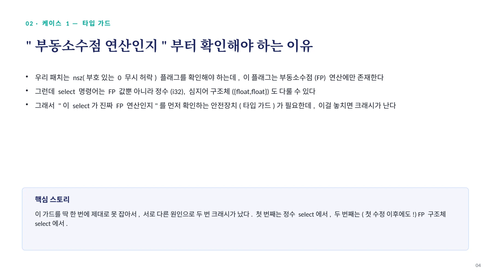
02 · 케 이 스 1A — 1 차 시 도 / 정수 select 에서 크래시 / // ❌ 처음 코드 ; 이런 정수 select 에서
02 · 케이스 1A — 1 차 시도
정수 select에서 크래시
// ❌ 처음 코드
if (!Outer.hasNoSignedZeros())
return nullptr;증상
•
Assertion: isa<FPMathOperator>(this) 로 즉시 강제종료 (SIGABRT)
; 이런 정수 select 에서
%r = select i1 %c, i32 %a, i32 %b원인
•
hasNoSignedZeros() 는 내부적으로 " 이건 FP 연산이 맞다 " 를 assert 함
•
정수 select는 FP 연산이 아니므로 그 assert가 바로 깨짐
// ✅ 수정 v1
if (!isa<FPMathOperator>(&Outer) || !Outer.hasNoSignedZeros())
return nullptr; // "FP 연산인지 " 먼저 확인 후에 nsz 체크05
페이지 배치·기호·도식 확인하기

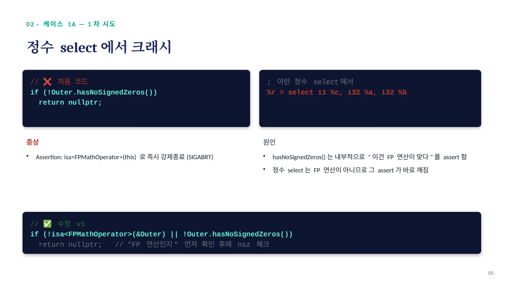
02 · 케 이 스 1B — 수 정 V1 도 부 족 했 음 (F U ZZ E R 가 발 견 ) / FP ' 구조체 ' 에서 또 크래시 / 먼저 : aggregate 타입이 뭔지
02 · 케이스 1B — 수정 V1 도 부족했음 (FUZZER 가 발견 )
FP '구조체'에서 또 크래시
먼저 : aggregate 타입이 뭔지
•
scalar: float 값 하나 ( 예 : 3.14)
•
vector: float 여러 개를 한 묶음으로 ( 예 : <4 x float>)
•
aggregate( 구조체 ): float 여러 개를 이름 붙여 묶은 것 ( 예 : { float, float })
•
FPMathOperator는 놀랍게도 이 구조체 형태(모든 필드가 FP인 경우)까지 포함한다!
; 재현 코드
%r = select nsz i1 %c,
{ float, float } %a,
{ float, float } %bUNREACHABLE at Type.cpp:115
"Invalid floating type"원인
구조체는 vector 가 아니라서 , getScalarType() 을 불러도 구조체 자기 자신이 그대로 반환된다 . 그 결과를 getFltSemantics() 에 넘기면 , " 이건 float 하나짜리 타입이 아니다"라서 크래시가 난다.
// ✅ 최종 수정 v2 — scalar/vector float만 허용 , 구조체는 배제
if (!Outer.getType()->isFPOrFPVectorTy() || !Outer.hasNoSignedZeros())
return nullptr;06
페이지 배치·기호·도식 확인하기

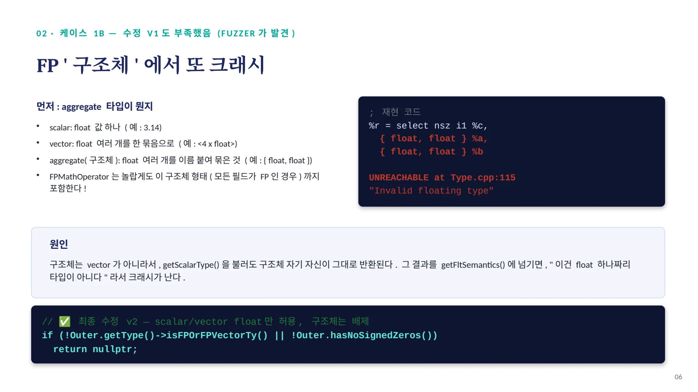
02 · 케 이 스 1 — 마 무 리 / 타입 가정의 함정 / 시도 가드 왜 부족했나
02 · 케이스 1 — 마무리
타입 가정의 함정
시도 | 가드 | 왜 부족했나 |
|---|---|---|
1차 | hasNoSignedZeros() 그냥 호출 | FP 연산이라는 보장 자체가 없음 |
2 차 (v1) | isa<FPMathOperator> 추가 | 'FP 연산'의 정의에 구조체까지 포함됨을 놓침 |
3 차 (v2, 최종 ) | isFPOrFPVectorTy() | scalar·vector 만 정확히 허용 , 구조체는 배제 |
교훈
"FP 연산이다"라는 말이 우리 직관(그냥 float/double 하나)보다 훨씬 넓은 범위(구조체까지)를 가리킬 수 있다. 안전한 타입 가드를 짤 때는, 딱 필요한 범위(scalar/vector)만 명시적으로 좁혀야 한다.
이 구조체 케이스는 사람이 직접 예상하지 못했고, llvm-hackme라는 자동 fuzzing 도구가 발견했다 — 회귀 테스트 n11_fp_aggregate로 고정됨
07
페이지 배치·기호·도식 확인하기

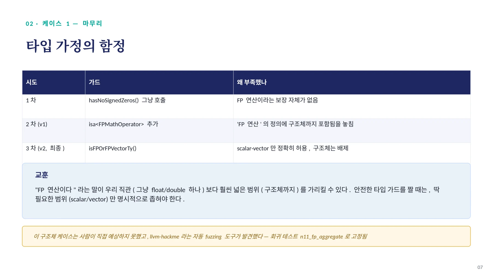
03 · 케 이 스 2 — 과 잉 제 약 ( 리 뷰 어 지 적 ) / fcmp 에 nsz 를 요구한 건 불필요했다 / // ❌ fcmp 에도 nsz 를 요구함
03 · 케이스 2 — 과잉 제약 ( 리뷰어 지적 )
fcmp에 nsz를 요구한 건 불필요했다
// ❌ fcmp 에도 nsz 를 요구함
if (!Cmp1 || !Cmp1->hasOneUse() ||
Cmp1->getPredicate() != FCmpInst::FCMP_ULT ||
!Cmp1->hasNoSignedZeros()) // ← 이 줄이 문제
return nullptr;리뷰어 dtcxzyw: "nsz on fcmp is meaningless. +0/-0 are always considered equal by fcmp."
•
fcmp는 IEEE-754 비교라서, 애초에 +0.0과 -0.0을 항상 같다고 취급함 (nsz가 없어도 이미 그렇게 동작)
•
그러니 fcmp에 nsz를 요구하는 건 아무 의미 없이 조건만 까다롭게 만드는 것 — 유효한 패턴을 놓치는 과잉 제약
•
수정 : fcmp 쪽의 !hasNoSignedZeros() 검사는 삭제 . nsz 는 진짜로 값을 만드는 select(upper/lower/outer) 에만 유지
08
페이지 배치·기호·도식 확인하기

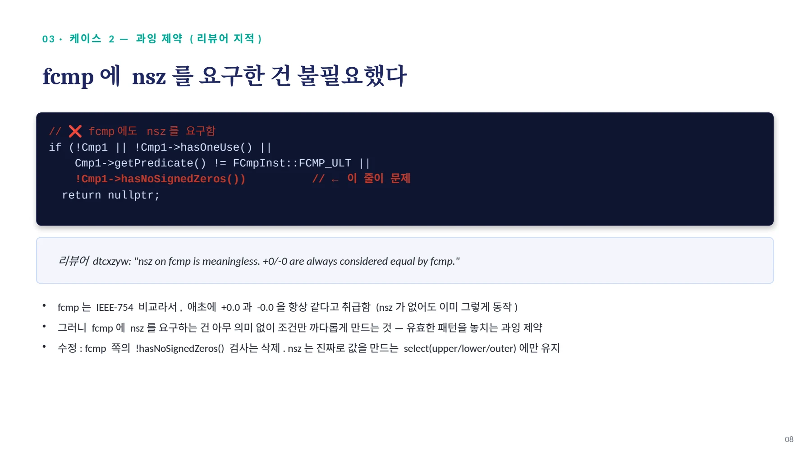
04 · 케 이 스 3 — 정 확 성 누 락 / " 하한이 상한보다 클 수도 있다 " 는 걸 안 막았다 / • clamp(x, LO, HI) 는 보통 LO ≤ HI 라고 당연히 가정하고 짜지만 ,
04 · 케이스 3 — 정확성 누락
"하한이 상한보다 클 수도 있다"는 걸 안 막았다
•
clamp(x, LO, HI)는 보통 LO ≤ HI라고 당연히 가정하고 짜지만, 코드 구조상 LO > HI(예: LO=1, HI=0)인 경우도 매칭 조건을 다 통과한다
•
패치는 Lo, Hi를 상수로 받기만 하고, 그 대소 관계를 확인하지 않은 채 바로 minnum/maxnum을 만들었다
// ❌ 상수인지만 확인, 대소 관계는 확인 안 함
auto *Lo = dyn_cast<Constant>(Cmp1->getOperand(1));
auto *Hi = dyn_cast<Constant>(Cmp2->getOperand(1));
// ... 바로 minnum/maxnum 생성09
페이지 배치·기호·도식 확인하기

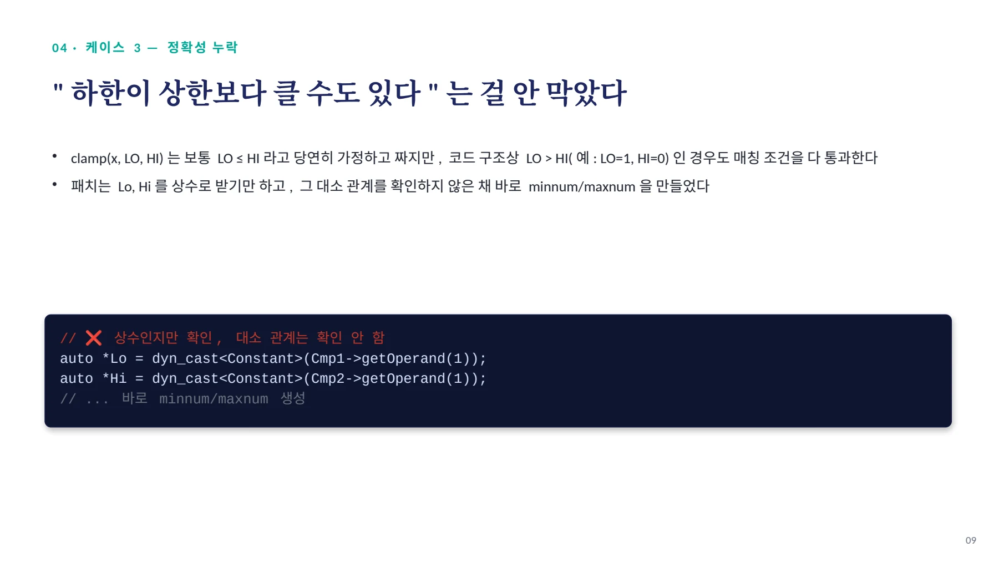
04 · 케 이 스 3 — 손 으 로 검 증 / x=2, LO=1, HI=0 을 넣어보면 / 원본 코드 (src) 변환 코드 (tgt)
04 · 케이스 3 — 손으로 검증
x=2, LO=1, HI=0 을 넣어보면
원본 코드 (src)
x < LO(1) 이거나 NaN? → 2<1 false
x < HI(0)? → 2<0 false
upper = HI = 0
belowLoOrNan = false → 그대로 upper결과 = 0변환 코드 (tgt)
upperV = minnum(2, HI=0) = 0
clamped = maxnum(0, LO=1) = 1결과 = 1결과 불일치 = miscompile
같은 입력(x=2, LO=1, HI=0)인데 src는 0을, tgt는 1을 반환한다. 즉 이 fold는 LO>HI인 경우 원본과 다른 값을 만들어내는, 명백히 틀린 변환이다.
10
페이지 배치·기호·도식 확인하기

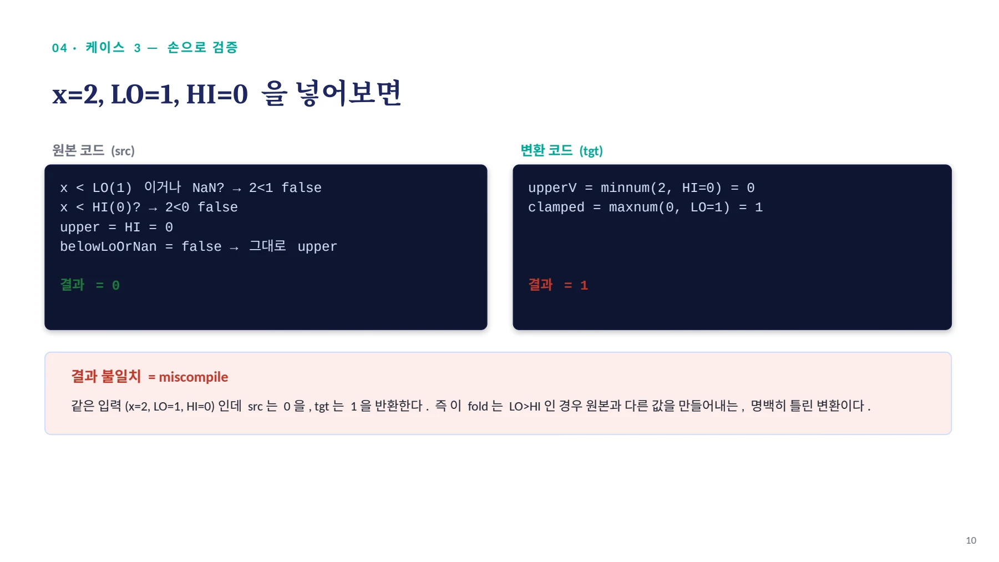
04 · 케 이 스 3 — 왜 안 터 졌 나 + 수 정 / " 우연히 안전했던 " 것 — 위험한 상태 / 지금까지 이 버그가 실제로 안 터진 이유: InstCombine 의 다른 패스가 LO>HI
04 · 케이스 3 — 왜 안 터졌나 + 수정
"우연히 안전했던" 것 — 위험한 상태
지금까지 이 버그가 실제로 안 터진 이유: InstCombine의 다른 패스가 LO>HI 트리를 우리 fold가 보기도 전에 먼저 정리해버려서, 우리 matcher까지 도달을 안 함. 이건 '우리 코드가 안전해서'가 아니라 '운이 좋아서'다.
•
이런 식으로 다른 pass의 처리 순서에 기대는 안전성은 취약함 (pass 순서가 바뀌면 그대로 버그로 노출됨)
•
교훈: fold는 '누군가 먼저 걸러줄 것'을 기대하지 말고, 자기 매칭 조건만으로 완결되게 (self-contained) 정확해야 한다
// ✅ 수정 — LO <= HI 명시적 확인
Constant *LeCmp =
ConstantFoldCompareInstOperands(
FCmpInst::FCMP_OLE, Lo, Hi,
Outer.getDataLayout());
if (!LeCmp || !match(LeCmp, m_One()))
return nullptr;11
페이지 배치·기호·도식 확인하기

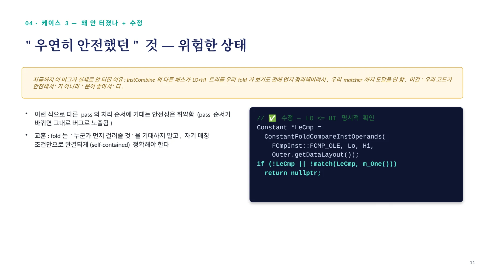
05 · 케 이 스 4 — 설 계 트 레 이 드 오 프 / "NaN 없음 " 을 안 붙였더니 생긴 부작용 / 우리 fold vs 기존 코드 — nnan 처리 방식이 다르다
05 · 케이스 4 — 설계 트레이드오프
"NaN 없음"을 안 붙였더니 생긴 부작용
우리 fold vs 기존 코드 — nnan 처리 방식이 다르다
// 기존 코드 (InstCombineSelect.cpp) — 항상 nnan 있는 minnum/maxnum 만 생성
if (FCmp && FCmp->hasNoNaNs() && ...) {
... BinIntrInst->setHasNoNaNs(true); // nnan 강제로 붙임
}•
우리 fold는 NaN을 fcmp uno로 별도 처리하니, minnum/maxnum 자체에는 nnan을 안 붙임(붙이면 거짓말이 되니까)
•
근데 기존 코드는 왜 항상 nnan을 붙였을까? 이슈 #54554의 경고: "nnan 없는 minnum/maxnum은 많은 타깃에서 명령어 하나로 못 만들고, libcall로 내려야 한다"
12
페이지 배치·기호·도식 확인하기

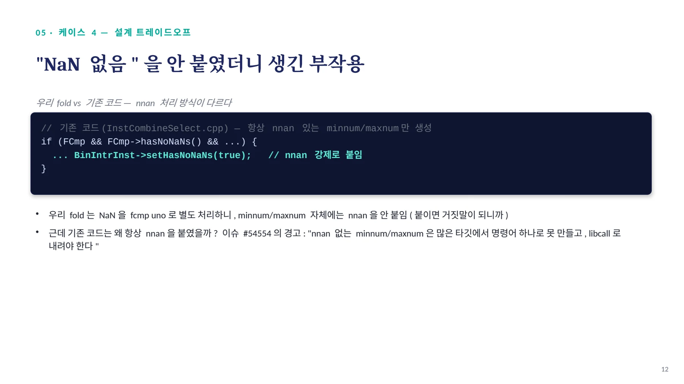
05 · 케 이 스 4 — 실 측 확 인 / 실제로 legacy 타깃에서 libcall 이 나왔다 / 타깃 변환 전 변환 후
05 · 케이스 4 — 실측 확인
실제로 legacy 타깃에서 libcall 이 나왔다
타깃 | 변환 전 | 변환 후 |
|---|---|---|
i686 / i386 / SPARC | 순수 fcmp/select (libcall 0 개 ) | call fmin / call fmax (libcall 발생 ) |
x86-64 (minss/maxss 지원 ) | fcmp/select | 네이티브 명령어 , libcall 0 개 |
AArch64 / RISC-V | fcmp/select | fminnm/fmaxnm 또는 fmin/fmax 네이티브 , libcall 0 개 |
왜 libcall 이 느린가
libcall은 하드웨어 전용 명령어 대신, 일반 함수처럼 호출(call)해서 처리하는 것 — 함수 호출 오버헤드(스택 준비, 점프, 복귀)가 그대로 붙는다. 원래는 fcmp/select만으로 처리되던 게, 변환 후 legacy 타깃에서는 오히려 매 픽셀마다 함수 호출이 생기는 역효과(regression)가 날 수 있다.
13
페이지 배치·기호·도식 확인하기

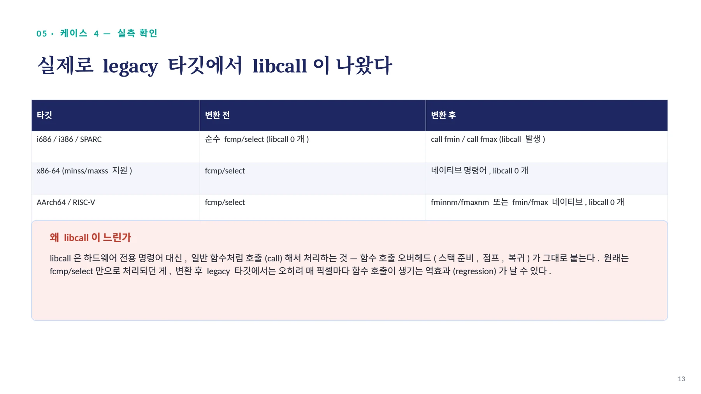
05 · 케 이 스 4 — 대 응 방 향 ( 아 직 진 행 중 ) / " 좁게 정당화 " 하는 전략 / • 지원 타깃 (x86 minss/maxss, AArch64 fminnm/fmaxnm, RIS
05 · 케이스 4 — 대응 방향 ( 아직 진행 중 )
"좁게 정당화"하는 전략
•
지원 타깃 (x86 minss/maxss, AArch64 fminnm/fmaxnm, RISC-V fmin/fmax) 에서는 네이티브 명령어로 처리되어 문제없음
•
실전 코퍼스 근거 (darktable 의 hot pixel-processing 루프 , 반복 실행 빈도 높음 ) 로 이득이 legacy 타깃 손해보다 크다고 정당화
•
기존 코드의 nnan 안전장치(다른 fold 경로)는 그대로 유지 — 우리 fold만 예외적으로 nnan 없이 생성
•
PR 본문에 이슈 #54554를 미리 인지하고 있다는 것과, 그 정당화 근거를 선제적으로 반영
미해결 리스크: InstCombine은 타깃 독립(target-independent) 패스라서, legacy 타깃에서도 이 fold가 그대로 발동한다 — upstream 리뷰에서 재논의될 가능성이 있음
14
페이지 배치·기호·도식 확인하기

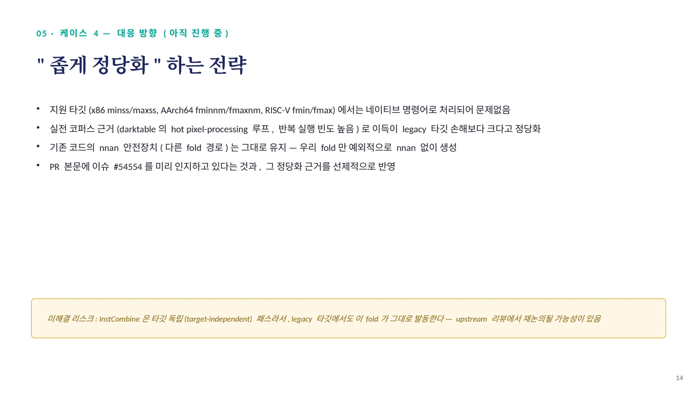
06 · 요 약 / 네 가지 문제 , 한 장으로 / # 문제 코드 증상 근본 원인 수정
06 · 요약
네 가지 문제, 한 장으로
# | 문제 코드 | 증상 | 근본 원인 | 수정 |
|---|---|---|---|---|
1A | hasNoSignedZeros() 직접 호출 | 정수 select 크래시 | FP 전용 API를 정수에 호출 | isa<FPMathOperator> 추가 |
1B | isa<FPMathOperator> | | FPMathOperator 가 FP 구조체 포함 | isFPOrFPVectorTy() |
2 | Cmp->hasNoSignedZeros() | (과잉 제약) | fcmp는 +0/-0 이미 동일 취급 | fcmp의 nsz 요구 제거 |
3 | LO≤HI 미검사 | 잠재 miscompile | 구조적으로 LO>HI도 매칭됨 | FCMP_OLE 상수 가드 |
4 | non-nnan minnum 생성 | libcall(legacy 타깃 ) | 타깃 독립 패스가 non-nnan 생성 | narrow 정당화 + 근거 문서화 |
15
페이지 배치·기호·도식 확인하기

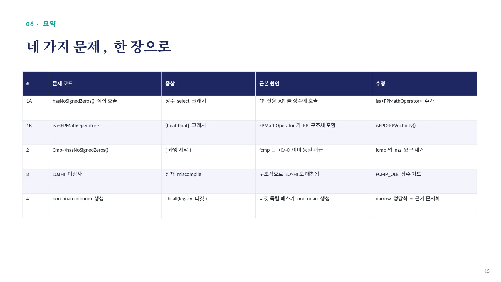
발표 포인트 / "FP 연산 " 이라고 다 scalar/vector 가 아니다 (aggregate 포함 ) — isFPOrFPVectorTy() 로 명시적으로 좁혀야 / 1 타입 가정의 함정
발표 포인트
1 타입 가정의 함정
2 의미 없는 제약 제거
3 격리된 정확성
4 타깃 독립 패스의 한계
5 자동 검사의 가치
"FP 연산 " 이라고 다 scalar/vector 가 아니다 (aggregate 포함 ) — isFPOrFPVectorTy() 로 명시적으로 좁혀야
fcmp의 nsz는 무의미 — 정확히 필요한 조건만 요구해야 유효한 패턴을 놓치지 않음
다른 pass가 먼저 걸러줄 거라 기대하지 말고, 자기 매칭 조건만으로 완결되게 정확해야 함(LO≤HI)
mid-end 가 non-nnan min/max 를 만들면 , 특정 타깃 백엔드에서 libcall 로 낮아질 위험이 있음
사람이 놓친 aggregate 크래시를 , fuzzing 도구 (llvm-hackme) 가 실제로 잡아냄
16
페이지 배치·기호·도식 확인하기

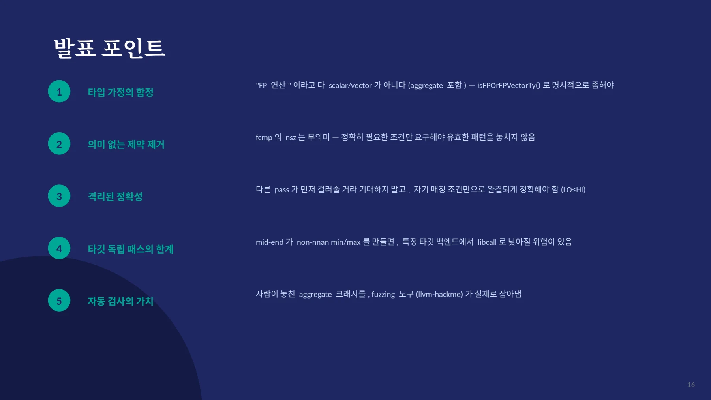
핵심 원리와 편집 주석
문제의 범위
이 문서는 foldClampWithNaNFallback의 구현 과정에서 발견한 문제를 다룬다. 파일명의 숫자보다 본문에 명시된 이슈 #213189를 기준으로 연결한다.
| 문제 | 원인 | 대응 |
|---|---|---|
| 정수 select의 크래시 | FP 전용 속성을 타입 확인 없이 조회 | 허용 타입을 먼저 검사 |
| FP aggregate의 크래시 | FPMathOperator가 필요한 범위보다 넓음 | isFPOrFPVectorTy 사용 |
| 정상 패턴의 누락 | fcmp에도 nsz를 요구 | 불필요한 비교 플래그 조건 제거 |
| 상하한 역전 | LO > HI를 매칭 조건에서 배제하지 않음 | LO <= HI를 명시적으로 확인 |
| 일부 타깃의 비용 증가 | nnan 없는 min/max가 libcall로 내려감 | 타깃별 결과와 적용 근거 검토 |
타입 가드
select는 정수, 부동소수점, aggregate 값도 선택할 수 있다. FP 필드로 이루어진 구조체도 필요한 scalar·vector 타입과는 다르다.
if (!Outer.getType()->isFPOrFPVectorTy() ||
!Outer.hasNoSignedZeros())
return nullptr;자료에 따르면 aggregate 사례는 fuzzing 도구가 발견했다. 해당 입력은 이후 회귀 테스트로 남았다.
상하한 역전 반례
x=2, LO=1, HI=0을 대입하면 문제를 직접 확인할 수 있다. 원래 트리는 0을 반환하고 단순 min/max 변환은 1을 반환한다.
다른 fold가 먼저 이 입력을 정리한다는 가정은 이 fold 자체의 정확성 조건을 대신하지 못한다. matcher에서 LO <= HI를 확인해야 한다.
기계어 비용과 남은 판단
자료는 i686·i386·SPARC의 일부 설정에서 fmin·fmax 호출을 관찰했다고 기록한다. 비교·선택만 있던 경로에 새 호출이 생길 수 있다.
문서 전문과 버전
- PDFPDF 원자료 · 16쪽llvm213690_proceed.pdf
각 자료는 별도의 버전입니다. 같은 주제라도 구현 상태·설명 범위·수치가 다를 수 있습니다.
관련 이슈와 PR
구현·병합 상태와 측정값은 해당 제출 자료의 작성 시점 기준입니다.